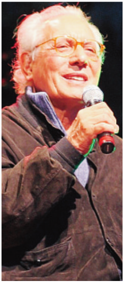

CANTÙ (dsr) Un tributo a
Enzo Jannacci sul palco
del teatro Fumagalli.
Lo spettacolo «Grazie
Maestro», dedicato al
grande artista scomparso
alcuni anni fa, andrà in
scena sabato 6 dicembre
e a organizzarlo è il grup-
po fb «Quelli che... Enzo
Jannacci ce l’hanno nel
cuore» con lo Studio
Athena di Monza e il pa-
trocinio dell’assessorato
alla Cultura del Comune
di Cantù.
«Lo spettacolo nasce
con l’intento di valoriz-
zare il patrimonio arti-
stico che ci ha lasciato -
hanno spiegato gli orga-
nizzatori - Per la sua gran-
de umiltà e generosità e
perché le sue “non sono
solo canzonette” ma mol-
to, molto di più».
A esibirsi sarà la Jan-
nacci band formata da
Marco Brioschi (tromba
e flicorno), Sergio Farina
(chitarra), Paolo Brio-
schi (pianoforte) , Piero
Orsini basso e contrab-
basso), Flaviano Cuffari
(batteria e percussioni) e,
come special guest Paolo
Tomelleri. Le voci saran-
no Andrea Achilli, Clau-
dio Sanfilippo, Stefano
Usini, Silvana Lorenzetti
e Micaela Negri. L’evento
sarà caratterizzato dalla
partecipazione straordi-
nario di Osvaldo Arden-
ghi e del Duo Bove e
Limardi. Il ricavato sarà
devoluto in beneficenza. i
biglietti potranno essere
acquistati in prevendita
alla «Libux is for books»
di via Dante a Cantù
(0317073497, info@li-
bux.it). Per informazioni
è possibile contattare il
numero 3409472554.

IL GRANDE ARTISTA Enzo
Jannacci durante una delle
sue esibizioni, che si è svolta
a Carate
Marco Brioschi
CANTÙ (dsr) Marco Brioschi suona la tromba-flicorno.
Come ha conosciuto il grande Enzo Jannacci?
«Ero bambino. Mio padre, sassofonista, colla-
borava con Giorgio Gaber. Mio fratello Paolo, pia-
nista, suonava nel sestetto al Club 2 in Brera
capitanato da Paolo Tomelleri. Io ero ragazzino,
vedevo passare grandi artisti e ne faceva parte anche
Enzo. Durante la mia carriera ho lavorato con lui,
inciso con lui dischi, mi ha sempre colpito il suo
genio».
Cosa l’ha colpita in particolare?
«Il personaggio. Il fatto che lui facesse parte della
musica pop ma sembrava non ne facesse parte.
Diceva che faceva solo canzonette, gli artisti erano gli
altri. Parlando con i tournisti musicisti italiani chie-
dendo loro con chi avrebbero desiderato lavorare
tutti mi rispondono Enzo Jannacci! Lui ha sempre
infatti avuto musicisti di alto livello al suo fianco».
I suoi ricordi del Maestro?
«Due in particolare. Un giorno mi chiamò la casa
editrice del mio libro “Appunti di Viaggio” dicendomi
che aveva composto su di me una poesia in due
minuti definendomi il suo volatore di aquiloni. Il
secondo ricordo si accende quando salgo sulla
Kawasaki che 20 anni fa mi regalò... e ogni volta che
suono i suoi brani».
La Produttrice Silvia Reggiani
CANTÙ (dsr) Silvia Reggiani è la produttrice del concerto.
Cosa l’ha spinta a organizzare un concerto in onore del Maestro?
«Le motivazioni sono molteplici. Mi limito a dire che avendo un’im-
mensa considerazione di questo grande artista, voglio e desidero che la
sua immensa poesia a volte surreale ma spesso densa e vera venga
conosciuta da più gente possibile. Fa parte dei grandi come De Andrè ,
Guccini e a mio avviso gli spetta di diritto un posto nei testi scolastici di
letteratura».
Come mai proprio tappa della tournè a Cantù?
«So per certo che il Maestro ha conservato un ricordo molto forte degli
anni che ha prestato servizio presso il Vostro Ospedale, ho avuto modo
di parlare con medici che hanno lavorato con lui. I cittadini di Cantù
portano ancora nella memoria quel dottore un po’ stralunato che si
presentava in corsia con la chitarra per rendere meno pesante la
degenza. Ho ritenuto importate farlo ricordare a Cantù con le sue
canzoni portando in tour i suoi artisti, comici e musicisti che hanno
lavorato anni con lui e sono ancora sulla breccia».
Stefano Usini,
una delle voci del concerto
CANTÙ (dsr) Stefano Usini è una delle voci del concerto
Che cosa ci può raccontare di lui ha qualche aneddoto qualche ricordo del Maestro?
«Beh, intanto la cosa che tutt'ora mi stupisce è il fatto di essere stato chiamato a far parte di questo spettacolo... proprio perché non mi sento così artista. Forse la risposta però sta nel fatto che qualcuno ha visto e riconosciuto in me il grande amore per l'artista Enzo Jannacci».
Quanto ha inciso nella sua maniera di cantare e di fare musica, conoscere l'artista Jannacci?
«Una cosa tra le tante che mi hanno sempre colpito di Enzo è il raccontare e rendere interessante, poetica, anche la quotidianità.
Non è cosa facile. Enzo riesce a farlo in modo incredibile con una tale facilità. E’ disarmante».
Che opinione ha invece dell'uomo e del medico?
«Non ho avuto purtroppo la fortuna di frequentare l'uomo e dottor Jannacci.
Quello che so, arriva da racconti di amici che l'anno conosciuto. Oggi il fare questo spettacolo con le persone che hanno trascorso la vita con lui è per me un regalo immenso e proprio i racconti di questo periodo mi stanno facendo capire che l'uomo, l'artista, il dottore, sono la stessa cosa che danno vita al suo genio. Il suo nome è Enzo Jannacci e io oggi sono fiero di essere qui a dire Grazie Maestro con tutte le persone che lo hanno veramente amato e ne hanno apprezzato l’opera artistica».
Osvaldo Ardenghi
CANTÙ (dsr) Il comico Osvaldo Ardenghi è stato uno degli artisti prediletti dal Maestro.
Ci può raccontare in breve come ha vissuto questa esperienza durata per circa venti anni?
«Secondo me è tra i 5 artisti più grandi d’Italia in questi ultimi 100 anni. E’ stato l’unico maestro che non mi ha mai dato un voto, ma mi ha fatto capire le mie qualità di attore comico e non, doti che non sapevo minimamente di avere essendo io un operaio con la passione del R&R.
Che cosa può dirci dell’Enzo Jannacci uomo, della sua umanità?
«Mi ha insegnato a non perdere mai la dignità, così facendo forse ho compromesso o quasi la mia carriera, ma posso andare in giro a testa alta».
Ci racconta un aneddoto che l’ha colpita particolarmente?
«Una sera d’inverno passando da casa sua per fargli una visita a sorpresa, lo incontrai sul portone di casa con un certificato di malattia in mano cavalcando il motorino, lo stava portando a casa di un operaio suo paziente che influenzato non poteva uscire.
Non so se il mio medico l’avrebbe fatto»